Arte y cultura
46 recursos de Arte y cultura en español, sin preparación y con solucionario: fichas de lectura, búsquedas del tesoro y más, filtrables por grado.
46 recursos
Grado
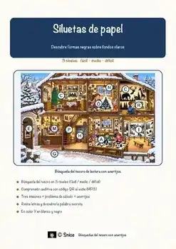
«Siluetas de papel» – Búsqueda del tesoro de lectura
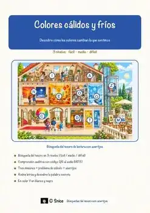
«Colores cálidos y fríos» – Búsqueda del tesoro de lectura
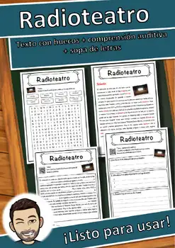
Radioteatro – Ficha de lectura: texto con huecos, comprensión auditiva y sopa de letras
Museo al aire libre – Ficha de lectura: texto con huecos, comprensión auditiva y sopa de letras
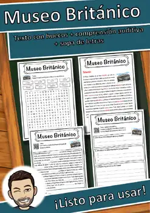
Museo Británico – Ficha de lectura: texto con huecos, comprensión auditiva y sopa de letras
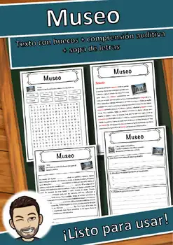
Museo – Ficha de lectura: texto con huecos, comprensión auditiva y sopa de letras
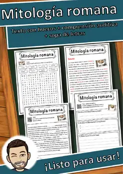
Mitología romana – Ficha de lectura: texto con huecos, comprensión auditiva y sopa de letras
Miguel de Cervantes – Ficha de lectura: texto con huecos, comprensión auditiva y sopa de letras
Literatura – Ficha de lectura: texto con huecos, comprensión auditiva y sopa de letras
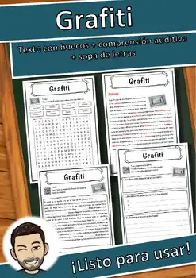
Grafiti – Ficha de lectura: texto con huecos, comprensión auditiva y sopa de letras
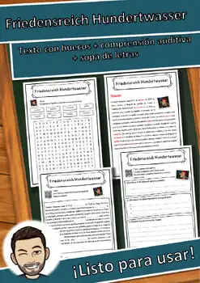
Friedensreich Hundertwasser – Ficha de lectura: texto con huecos, comprensión auditiva y sopa de letras
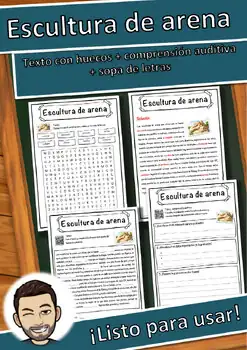
Escultura de arena – Ficha de lectura: texto con huecos, comprensión auditiva y sopa de letras

Arte – Ficha de lectura: texto con huecos, comprensión auditiva y sopa de letras
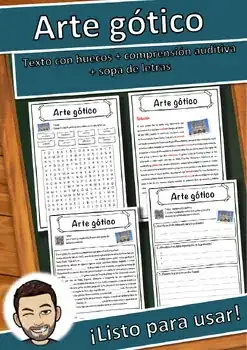
Arte gótico – Ficha de lectura: texto con huecos, comprensión auditiva y sopa de letras
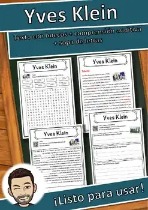
Yves Klein – Ficha de lectura: texto con huecos, comprensión auditiva y sopa de letras
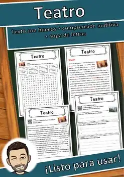
Teatro – Ficha de lectura: texto con huecos, comprensión auditiva y sopa de letras
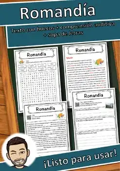
Romandía – Ficha de lectura: texto con huecos, comprensión auditiva y sopa de letras
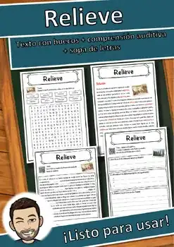
Relieve – Ficha de lectura: texto con huecos, comprensión auditiva y sopa de letras
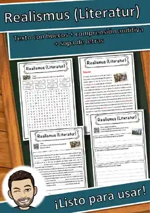
Realismo (literatura) – Ficha de lectura: texto con huecos, comprensión auditiva y sopa de letras
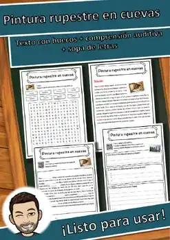
Pintura rupestre en cuevas – Ficha de lectura: texto con huecos, comprensión auditiva y sopa de letras
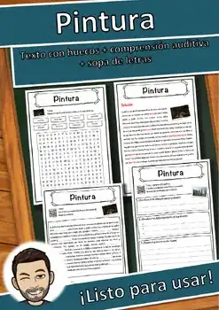
Pintura – Ficha de lectura: texto con huecos, comprensión auditiva y sopa de letras
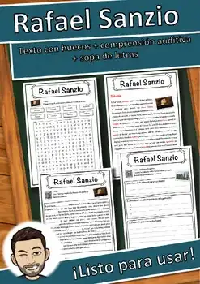
Rafael Sanzio – Ficha de lectura: texto con huecos, comprensión auditiva y sopa de letras
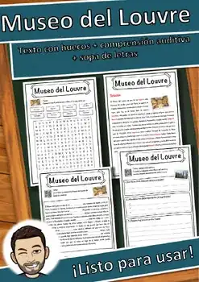
Museo del Louvre – Ficha de lectura: texto con huecos, comprensión auditiva y sopa de letras
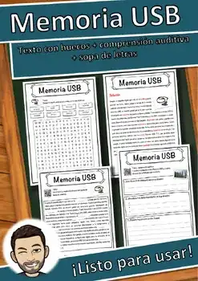
Memoria USB – Ficha de lectura: texto con huecos, comprensión auditiva y sopa de letras
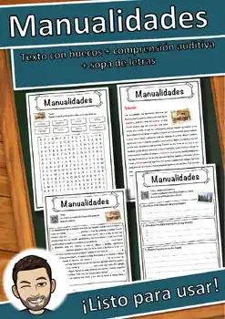
Manualidades – Ficha de lectura: texto con huecos, comprensión auditiva y sopa de letras
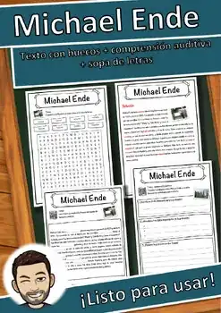
Michael Ende – Ficha de lectura: texto con huecos, comprensión auditiva y sopa de letras
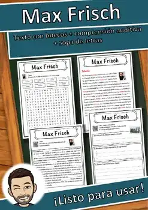
Max Frisch – Ficha de lectura: texto con huecos, comprensión auditiva y sopa de letras
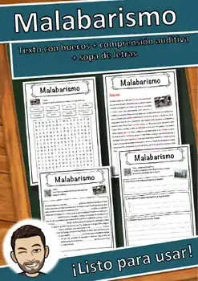
Malabarismo – Ficha de lectura: texto con huecos, comprensión auditiva y sopa de letras
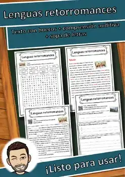
Lenguas retorromances – Ficha de lectura: texto con huecos, comprensión auditiva y sopa de letras
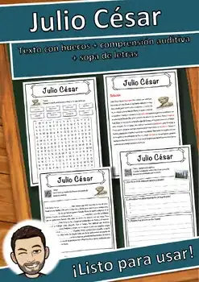
Julio César – Ficha de lectura: texto con huecos, comprensión auditiva y sopa de letras
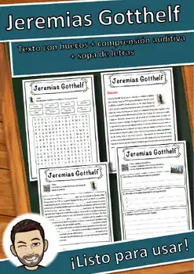
Jeremias Gotthelf – Ficha de lectura: texto con huecos, comprensión auditiva y sopa de letras
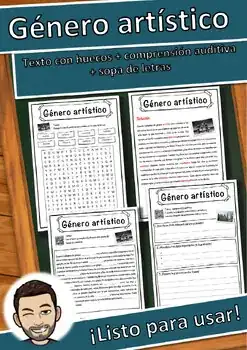
Género artístico – Ficha de lectura: texto con huecos, comprensión auditiva y sopa de letras
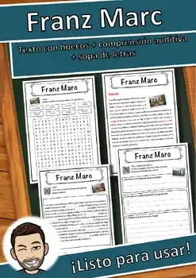
Franz Marc – Ficha de lectura: texto con huecos, comprensión auditiva y sopa de letras
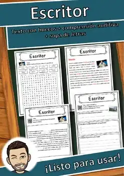
Escritor – Ficha de lectura: texto con huecos, comprensión auditiva y sopa de letras
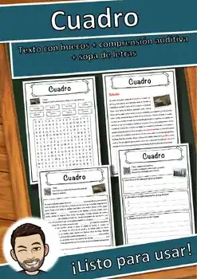
Cuadro – Ficha de lectura: texto con huecos, comprensión auditiva y sopa de letras
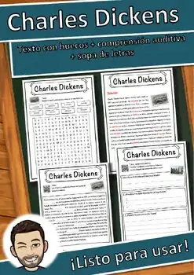
Charles Dickens – Ficha de lectura: texto con huecos, comprensión auditiva y sopa de letras
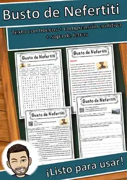
Busto de Nefertiti – Ficha de lectura: texto con huecos, comprensión auditiva y sopa de letras
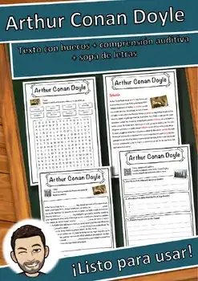
Arthur Conan Doyle – Ficha de lectura: texto con huecos, comprensión auditiva y sopa de letras
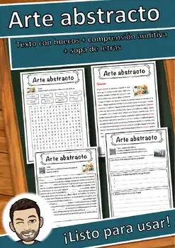
Arte abstracto – Ficha de lectura: texto con huecos, comprensión auditiva y sopa de letras
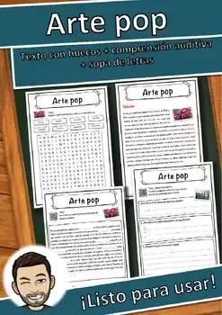
Arte pop – Ficha de lectura: texto con huecos, comprensión auditiva y sopa de letras
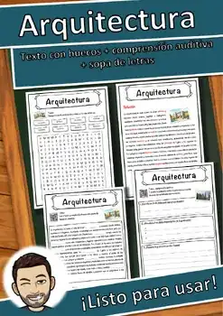
Arquitectura – Ficha de lectura: texto con huecos, comprensión auditiva y sopa de letras
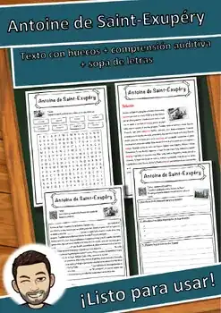
Antoine de Saint-Exupéry – Ficha de lectura: texto con huecos, comprensión auditiva y sopa de letras
Dante Alighieri
Dante Alighieri – Ficha de lectura: texto con huecos, comprensión auditiva y sopa de letras
Claude Monet
Claude Monet – Ficha de lectura: texto con huecos, comprensión auditiva y sopa de letras
Cerámica
Cerámica – Ficha de lectura: texto con huecos, comprensión auditiva y sopa de letras
Carl Barks
Carl Barks – Ficha de lectura: texto con huecos, comprensión auditiva y sopa de letras
No se encontraron recursos. Prueba con otra palabra o con otro filtro.